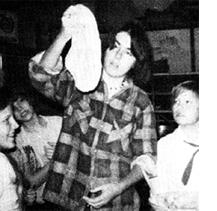
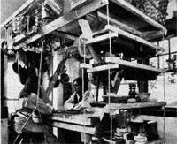
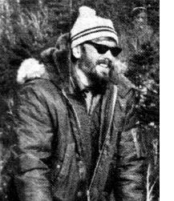

In celebration of little-known MOTHER-type folks from all over.
"Anyone is a baker after his first loaf," says Bonnie Rhoads. "You can't destroy bread unless you grossly exaggerate the ingredients."
And Bonnie-who, not long ago, couldn't tell a whole grain from a hole in the wall-ought to know: She now teaches a regular breadmaking class . . . for about 20 students at a crack.
Ms. Rhoads works for The Bread Shop, a four-year-old Chicago bakery (now expanding to include a natural foods cooperative grocery store), to help finance her college creative writing courses. Though she remembers that her brother knew how to bake bread years ago, Bonnie herself didn't learn to work dough till she was hired by the bakery. After that, though, it only took her about two weeks to start baking and teaching for the shop like an expert.
Students pay $1.50 for a two-hour lesson, and that payment covers all ingredients needed to make three onepound loaves of whole wheat bread (each member of the class brings his or her own large mixing bowl, a wooden spoon, and a kitchen towel). As Bonnie strolls around The Bread Shop's two large butcher block tables, encouraging and correcting her students, each class member learns what ingredients and proportions to use, how to mix dough, and how to knead and shape a sponge of bread . . . before taking his or her completed loaves home to be baked.
"I teach students how to make whole wheat bread," Bonnie explains, "because it's the basis of so many other breads. Once you've mastered whole wheat, it's simple to add nuts, raisins, fruits, or cheese."
If there's a whole lot more natural bread being enjoyed in the city of Chicago than ever before, then, one per son you can thank for it is Bonnie Rhoads! - Bernard Lyons.
Soon after Joseph and Deborah Provey of Darien, Connecticut were married, they realized they couldn't get by forever with the redwood patio furniture they'd borrowed from Joseph's parents. But the predictable kinds of house furnishings they saw for sale seemed-if they could even afford them-unsuited to their tastes and lifestyle.
Furthermore, it bothered them that in their small dwelling all the open space above their heads that they were using so much extra fuel to heat . . . was going to waste!
So Joseph-though he'd never seemed to have any aptitude for working with his handsdecided to design some attractive, inexpensive, and utilitarian furniture for himself and his bride. And, before long, he'd conceived of a series of vertical living systems that are like birds' nests for people: light and airy, yet warm (since heat rises) and sturdy. The designswhich include a desk loft, a floating bed, and a crafts/kitchen wagon-are freestanding, multifunctional, collapsible, convertible, and infinitely adaptable.
So well did Joseph's constructions turn out that he decided (freelance writer, illustrator, and cartoonist that he is) to share his inspirations in a book. And Henry Regnery Company in Chicago is the publisher of Systems of Living Space, available in hard cover ($12.95) or paperback ($6.95).
The Provey nests are made of commonly available materials, with a minimal number of tools, and should prove easy for the most inexperienced handyman or -woman to put together.
There are alternatives, then (thanks to creative people like Joseph), to conventional furniture and its monthly payments. As Joseph Provey says, that kind of apathetic consumerism just "doesn't jibe with the American ideals of freedom and self-sufficiency". -Sonia Nordenson.
In 1968, Harris Dunlap purchased his first sled dog. Which soon led the Buffalo, New York art teacher and suburbanite to buy an army surplus sled . . . which led to the purchase of another dog . . . and then another
Today, less than 10 years after that first impulsive purchase, Harris has risen from his amateur status to become a top professional in the highly competitive world of sled dog racing. In fact, he now has a full-fledged business of his own: Zero Kennels, comprised of 100 to 150 dogs of all ages.
Dunlap's successful competition in races all over the country isn't the only feather in his cap, either:He's become such a respected breeder and trainer too, that now even universities consult him about veterinary matters. And Harris
enjoys that additional challenge too: "After all," he says, "there's been very little written about lameness in sled dogs.
Besides working to attain the highest of honors in his unusual career, Harris is always striving to perfect his family's self-sufficient lifestyle. The Dunlaps live outside the tiny hamlet of Bakers Mills in New York State's Adirondack Mountains, on property that includes a large old farmhouse, a field full of huskies (each with its own buried barrel for shelter), a big barn, and an ample garden area. Dog wastes are converted to rich fertilizer, and each year the family puts up a good supply of organically grown vegetables. They keep their own milk goats, heat their house with wood . . . and a recent project for Harris is the conversion of the Dunlaps' oil-heated water system to one that warms water with heat from the wood stove.
There's little that a rugged spirit and a sincere wish for alternatives can't achieve. Case in point: Harris Dunlap. -Nancy Tucker.
Know someone--sung or unsung-who's doing something of merit in wholistic gardening, alternative energy, conservation, self-employment, low-cost house construction, or any other field of endeavor featured in MOTHER' A fart-fillcd. 450- to 500-word essay describing that person and a sharp, glossy, black-andwhite photo ran-upon acceptance for use in PROFILESearn you a fast, flat $50. Send your contribution to: PROFILES Editor, THE Mother Earth News', P.O. Box 70, Hendersonville, N.C. 28739.
|
 PHOTO BY BERNARD LYONS Joseph and Deborah at crafts/kitchen wagon |
 PHOTO HENRY REGNERY CO. |
 PHOTO BY W. GRISHKOT |